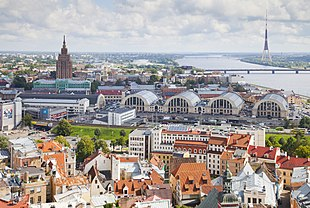

Economy of Latvia
|  Riga with its Central Market in the view | |
| Currency | Euro (EUR, €) |
|---|---|
| Calendar year | |
Trade organisations | EU, OECD and WTO |
Country group | |
| Statistics | |
| Population | |
| GDP | |
| GDP rank | |
GDP growth | |
GDP per capita | |
GDP per capita rank | |
GDP by sector |
|
Population below poverty line | |
Labour force | |
Labour force by occupation |
|
| Unemployment | |
Average gross salary | €1,623 monthly (May, 2024) |
| €1,180 monthly (May, 2024) | |
Main industries | processed foods, processed wood products, textiles, processed metals, pharmaceuticals, railroad cars, synthetic fibers, electronics |
| External | |
| Exports | |
Export goods | foodstuffs, wood and wood products, metals, machinery and equipment, textiles |
Main export partners | |
| Imports | |
Import goods | machinery and equipment, consumer goods, chemicals, fuels, vehicles |
Main import partners | |
FDI stock | |
Gross external debt | |
| Public finances | |
| Revenues | 37.8% of GDP (2024)[25] |
| Expenses | 40.8% of GDP (2024)[26] |
| Economic aid |
|
All values, unless otherwise stated, are in US dollars. | |
The economy of Latvia is an open economy in Europe and is part of the European Single Market. Latvia is a member of the World Trade Organization (WTO) since 1999,[34] a member of the European Union since 2004, a member of the Eurozone since 2014 and a member of the OECD since 2016.[35] Latvia is ranked the 14th in the world by the Ease of Doing Business Index prepared by the World Bank Group.[36] According to the Human Development Report 2023/24 by the United Nations Development Programme, has a HDI score of a 0.879 (2022 data).[37] Due to its geographical location, transit services are highly developed, along with timber and wood processing, agriculture and food products, and manufacturing of machinery and electronic devices.
Latvia's economy has had rapid GDP growth of more than 10% per year during 2006–07, but entered a severe recession in 2009 as a result of an unsustainable current account deficit, collapse of the real estate market, and large debt exposure amid the softening world economy. Triggered by the collapse of Parex Bank, the second largest bank, GDP decreased by almost 18% in 2009,[38] and the European Union, the International Monetary Fund, and other international donors provided substantial financial assistance to Latvia as part of an agreement to defend the currency's peg to the euro in exchange for the government's commitment to stringent austerity measures. In 2011 Latvia achieved GDP growth by 5.5%[39] and thus Latvia again was among the fastest growing economies in the European Union. The IMF/EU program successfully concluded in December 2011.[40]
Privatization is mostly complete, except for some of the large state-owned utilities. Export growth contributed to the economic recovery, however, the bulk of the country's economic activity is in the services sector.
Economic history
[edit]For centuries under Hanseatic and German influence and then during its inter-war independence, Latvia used its geographic location as an important east–west commercial and trading centre. Industry served local markets, while timber, paper and agricultural products were Latvia's main exports.
Prior to World War I, Latvia was an advanced manufacturing hub within the Russian Empire, primarily serving the Russian market.[41] After attaining independence in 1918, Latvia lost its status as an advanced manufacturing hub.[41] Latvia sought in the interwar period to become an international exporter of food and to re-industrialize.[41] Latvia experienced growth in GDP per capita during the interwar period, although some economic historians have argued that there was stagnation in the period of the authoritarian Karlis Ulmanis regime (1934–1940).[41]
After reestablishing its independence, Latvia proceeded with market-oriented reforms, albeit at a measured pace. Its freely traded currency, the lat, was introduced in 1993 and held steady, or appreciated, against major world currencies. Inflation was reduced from 958.6% in 1992 to 25% by 1995 and 1.4% by 2002.
After contracting substantially between 1991 and 1995, the economy steadied in late 1994, led by a recovery in light industry and a boom in commerce and finance. This recovery was interrupted twice, first by a banking crisis and the bankruptcy of Banka Baltija, Latvia's largest bank, in 1995 and second by a severe crisis in the financial system of neighbouring Russia in 1998. After 2000, Latvian GDP grew by 6–8% a year for 4 consecutive years. Latvia's state budget was balanced in 1997 but the 1998 Russian financial crisis resulted in large deficits, which were reduced from 4% of GDP in 1999 to 1.8% in 2003. These deficits were smaller than in most of the other countries joining the European Union in 2004.[42]
Until the middle of 2008, Latvia had the fastest developing economy in Europe. In 2003, GDP growth was 7.5% and inflation was 2.9%. The centrally planned system of the Soviet period was replaced with a structure based on free-market principles. In 2005, private sector share in GDP was 70%.[43] Recovery in light industry and Riga's emergence as a regional financial and commercial centre offset shrinkage of the state-owned industrial sector and agriculture. The official unemployment figure was held steady in the 7%–10% range.
Economic contraction in 2008–2010
[edit]The financial crisis of 2007–2008 severely disrupted the Latvian economy, primarily as a result of the easy credit bubble that began building up during 2004. The bubble burst leading to a rapidly weakening economy, resulting in a budget, wage and unemployment crisis.[44] Latvia had the worst economic performance in 2009, with annual growth rate averaging −18%.
The Latvian economy entered a phase of fiscal contraction during the second half of 2008 after an extended period of credit-based speculation and unrealistic inflation of real estate values. The national account deficit for 2007, for example, represented more than 22% of the GDP for the year while inflation was running at 10%.[45] By 2009 unemployment rose to 23% and was the highest in the EU.[46]
Paul Krugman, the Nobel Laureate in economics for 2008, wrote in his New York Times Op-Ed column for 15 December 2008:
"The acutest problems are on Europe's periphery, where many smaller economies are experiencing crises strongly reminiscent of past crises in Latin America and Asia: Latvia is the new Argentina".[47]
By August 2009, Latvia's GDP had fallen by 20% year on year, with Standard & Poor's predicting a further 16% contraction to come. The International Monetary Fund suggested a devaluation of Latvia's currency, but the European Union objected to this, on the grounds that the majority of Latvia's debt was denominated in foreign currencies.[48] Financial economist Michael Hudson has advocated for redenominating foreign currency liabilities in Latvian lats before devaluing.
However, by 2010 there were indications that Latvia's policy of internal devaluation was successful.[49]
Economic recovery 2010–2012
[edit]The economic situation has since 2010 improved,[50] and by 2012 Latvia was described as a success by IMF managing director Christine Lagarde[51] showing strong growth forecasts. The Latvian economy grew by 5.5% in 2011[52] and by 5.6% in 2012 reaching the highest rate of growth in Europe.[53] The GDP surpassed the pre-crisis level in 2018.[54]
Economic issues 2022-23
[edit]The Russian invasion of Ukraine in February 2022 caused some economic problems in Latvia. Real GDP growth slowed to 2.8 percent in 2022 from 4.3 percent in 2021. Russia was a major trade partner and EU sanctions impacted this. Dramatic rises in the cost of energy, the need to seek alternative sources of gas and oil as well as logistics issues resulted in inflation averaging 17.2% in 2022 before falling back to single digits in 2023.[55]
Privatisation
[edit]Privatisation in Latvia is almost complete. Virtually all of the previously state-owned small and medium companies have been privatized, leaving only a small number of politically sensitive large state companies. In particular, the country's main energy and utility company, Latvenergo remains state-owned and there are no plans to privatize it. The government also holds minority shares in Ventspils Nafta oil transit company and the country's main telecom company Lattelecom but it plans to relinquish its shares in the near future.
Foreign investment in Latvia is still modest compared with the levels in north-central Europe. A law expanding the scope for selling land, including land sales to foreigners, was passed in 1997. Representing 10.2% of Latvia's total foreign direct investment, American companies invested $127 million in 1999. In the same year, the United States exported $58.2 million of goods and services to Latvia and imported $87.9 million. Eager to join Western economic institutions like the World Trade Organization, OECD, and the European Union, Latvia signed a Europe Agreement with the EU in 1995 with a 4-year transition period. Latvia and the United States have signed treaties on investment, trade, and intellectual property protection and avoidance of double taxation.
Employment
[edit]Average wages are higher in Riga and Ventspils and their surroundings, with inland border regions lagging behind, mainly the region of Latgale.
Sectors
[edit]Primary
[edit]Agriculture
[edit]Latvia produced in 2018:
- 1.4 million tons of wheat;
- 426 thousand tons of potato;
- 306 thousand tons of barley;
- 229 thousand tons of rapeseed;
- 188 thousand tons of oat;
- 81 thousand tons of rye;
- 80 thousand tons of bean;
In addition to smaller productions of other agricultural products.[56]
Manufacturing
[edit]- Ogres Knitwear, since 1965
Services
[edit]In 2022, the sector with the highest number of companies registered in Latvia is Services with 71,692 companies followed by Retail Trade and Finance, Insurance, and Real Estate with 15,300 and 10,287 companies respectively.[57]
Infrastructure
[edit]Energy
[edit]Most of Latvian electricity is produced with Hydroelectricity. The largest hydroelectric power stations are Pļaviņas Hydroelectric Power Station, Riga Hydroelectric Power Plant and Ķegums Hydroelectric Power Station.
In 2017 about 4381 GWh were produced in hydro power and 150 GWh in wind power. There are plans to increase Wind electricity production under the 2021-2030 energy plan.
Latvia used to import 100% of its natural gas from Russia,[58] until its import was banned in January 2023.
Transport
[edit]Key ports are located in Riga (Freeport of Riga and Riga Passenger Terminal), Ventspils (Free port of Ventspils), and Liepāja (Port of Liepāja). Most transit traffic uses these and half the cargo is crude oil and oil products.
Latvian Railways is the main state-owned railway company in Latvia. Its daughter companies both carry out passengers services as well as carry a large quantity of freight cargo, and freight trains operate over the whole current passenger network, and a number of lines currently closed to passenger services.
Riga International Airport is the only major airport in Latvia, carrying around 5 million passengers annually. It is the largest airport in the Baltic states and has direct flights to over 80 destinations in 30 countries. It is also the main hub of airBaltic.
See also
[edit]References
[edit]- ^ "World Economic Outlook Database, April 2019". IMF.org. International Monetary Fund. Retrieved 29 September 2019.
- ^ "World Bank Country and Lending Groups". datahelpdesk.worldbank.org. World Bank. Retrieved 29 September 2019.
- ^ "Population on 1 June". data.stat.gov.lv. Retrieved 3 July 2024.
- ^ a b c d "Economy of Latvia: April 2024". imf.org. International Monetary Fund. Retrieved 8 July 2024.
- ^ a b c d "IMF Executive Board Concludes 2023 Article IV Consultation with the Republic of Latvia". International Monetary Fund. 9 July 2024.
- ^ a b c "Republic of Latvia: Staff Concluding Statement of the 2024 Article IV Mission". International Monetary Fund. 9 July 2024.
- ^ a b c d e f g "CIA World Factbook". CIA.gov. Central Intelligence Agency. Retrieved 21 July 2024.
- ^ a b c d e f g "World Economic Outlook database: April 2024". International Monetary Fund. 9 July 2024.
- ^ "People at risk of poverty or social exclusion by sex". ec.europa.eu. Eurostat. Retrieved 21 July 2024.
- ^ "Gini coefficient of equivalised disposable income – EU-SILC survey". ec.europa.eu. Eurostat. Retrieved 8 July 2024.
- ^ a b "Human Development Report 2023/2024" (PDF). United Nations Development Programme. 13 March 2024. Archived (PDF) from the original on 13 March 2024. Retrieved 4 May 2024.
- ^ "Corruption Perceptions Index". Transparency International. 30 January 2024. Archived from the original on 30 January 2024. Retrieved 15 July 2024.
- ^ "Labor force, total – Latvia". data.worldbank.org. World Bank. Retrieved 21 July 2024.
- ^ "Employment rate by sex, age group 20-64". ec.europa.eu/eurostat. Eurostat. Retrieved 20 July 2024.
- ^ "Unemployment rate". Central Statistical Bureau of Latvia. Retrieved 8 July 2024.
- ^ "Youth unemployment rate". Central Statistical Bureau of Latvia. Retrieved 8 July 2024.
- ^ "Eksports un imports pa valstīm (eiro)". eksports.csb.gov.lv. Retrieved 21 July 2024.
- ^ "Eksports un imports pa valstīm (eiro)". eksports.csb.gov.lv. Retrieved 21 July 2024.
- ^ "Macroeconomic Review of Latvia: April 2024". em.gov.lv. Ministry of Economics (Latvia). Retrieved 21 July 2024.
- ^ "World Economic Outlook Database, April 2024". IMF.org. International Monetary Fund. Retrieved 8 July 2024.
- ^ "Latvia external debt data tables". statdb.bank.lv. Bank of Latvia. Retrieved 8 July 2024.
- ^ "Government debt". data.stat.gov.lv/. National Statistical System of Latvia. Retrieved 8 July 2024.
- ^ "Government debt". data.stat.gov.lv/. National Statistical System of Latvia. Retrieved 8 July 2024.
- ^ a b "Council recommendation on the economic, social, employment, structural and budgetary policies of Latvia" (PDF). commission.europa.eu. European Commission. Retrieved 21 July 2024.
- ^ "World Economic Outlook Database, April 2024". IMF.org. International Monetary Fund. Retrieved 8 July 2024.
- ^ "World Economic Outlook Database, April 2024". IMF.org. International Monetary Fund. Retrieved 8 July 2024.
- ^ "Archived copy" (PDF). Archived (PDF) from the original on 25 December 2017. Retrieved 25 December 2017.
{{cite web}}: CS1 maint: archived copy as title (link) - ^ "Archived copy" (PDF). Archived (PDF) from the original on 20 April 2017. Retrieved 25 December 2017.
{{cite web}}: CS1 maint: archived copy as title (link) - ^ "Sovereigns rating list". Standard & Poor's. Retrieved 31 July 2024.
- ^ Rogers, Simon; Sedghi, Ami (15 April 2011). "How Fitch, Moody's and S&P rate each country's credit rating". The Guardian. London. Retrieved 31 May 2011.
- ^ "Government of Latvia – A3 stable: Regular update; stable outlook". Moody's. 2024. Retrieved 31 July 2024.
- ^ "Fitch Affirms Latvia at 'A-'; Outlook Positive". Fitch. 2024. Retrieved 21 July 2024.
- ^ "Scope affirms Latvia's credit ratings at A- and revises the Outlook to Stable from Positive". Scope Ratings. 2023. Retrieved 29 April 2023.
- ^ "Members and Observers".
- ^ "Latvia becomes full-fledged OECD member". LETA. 1 July 2016. Archived from the original on 10 August 2016. Retrieved 4 July 2016.
- ^ "Rankings – Doing Business – The World Bank Group". Doing Business. Retrieved 6 September 2012.
- ^ Human Development Index and its components Retrieved 2012-09-06
- ^ The CIA World Factbook Latvia – CIA – The World Factbook Retrieved 2012-09-06
- ^ "GDP of Latvia increased by 5.5% in 2011". The Baltic Course. 9 March 2012. Retrieved 24 March 2012.
- ^ Latvia and the Baltics—a Story of Recovery by Christine Lagarde managing director, International Monetary Fund Riga, 5 June 2012
- ^ a b c d Klimantas, Adomas; Norkus, Zenonas; Markevičiūtė, Jurgita; Grytten, Ola Honningdal; Šiliņš, Jānis (2023). "Reinventing perished "Belgium of the East": new estimates of GDP for inter-war Latvia (1920–1939)". Cliometrica. doi:10.1007/s11698-023-00275-y. ISSN 1863-2513.
- ^ "Latvia Economy, Politics and GDP Growth Summary - The Economist Intelligence Unit". country.eiu.com. Retrieved 4 July 2024.
- ^ Ruta Aidis, Friederike Welter: The Cutting Edge: Innovation and Entrepreneurship in New Europe, Edward Elgar Publishing, 2008, p. 32
- ^ Damien, McGuinness (4 February 2010). "In Pictures: Latvia economy reels in recession". BBC.
- ^ "Latvia". CIA. Retrieved 15 December 2008.
- ^ "Robin Hood hacker exposes bankers". BBC News. 24 February 2010. Retrieved 1 May 2010.
- ^ Krugman, Paul (15 December 2008). "European Crass Warfare". The New York Times. Retrieved 15 December 2008.
- ^ Evans-Pritchard, Ambrose (10 August 2009). "S&P downgrades Baltic states' debt ratings". The Daily Telegraph. London. Archived from the original on 13 August 2009.
- ^ "Baltic Business News, 8 February 2010". Archived from the original on 6 March 2016. Retrieved 17 January 2012.
- ^ Moody's: Latvian economy is stabilizing Archived 6 March 2016 at the Wayback Machine Baltic Business News, Retrieved on 3 September 2012
- ^ Those who change will endure – IMF managing director Archived 10 August 2019 at the Wayback Machine LETA Retrieved on 5 June 2012
- ^ Danske Bank: we expect Latvian GDP to grow by 2.0% y/y in 2012 Retrieved on 3 September 2012
- ^ GDP growth in Latvia, at 5.6%, the fastest in Europe; growth to moderate this year Archived 22 October 2013 at the Wayback Machine
- ^ "GDP (constant 2015 US$) – Latvia | Data". data.worldbank.org. Retrieved 1 December 2021.
- ^ "Republic of Latvia: Staff Concluding Statement of the 2023 Article IV Mission". 13 June 2023.
- ^ Latvia production in 2018, by FAO
- ^ "Industry Breakdown of Companies in Latvia". HitHorizons.
- ^ "Europe's Declining Gas Demand: Trends and Facts about European Gas Consumption – June 2015". (PDF). p.9. E3G. Source: Eurostat, Eurogas, E3G.
External links
[edit]- Latvia's Tiger Economy Loses Its Bite Archived 25 April 2010 at the Wayback Machine by Kristina Rizga, The Nation, 28 October 2009
- Latvia's Internal Devaluation: A Success Story?, from the Center for Economic and Policy Research, December 2011
- European Commission's DG ECFIN's country page on Latvia.
- World Bank Summary Trade Statistics 2012

{kind=link}
{kind=link}
{kind=link}
{kind=link}
{kind=link}